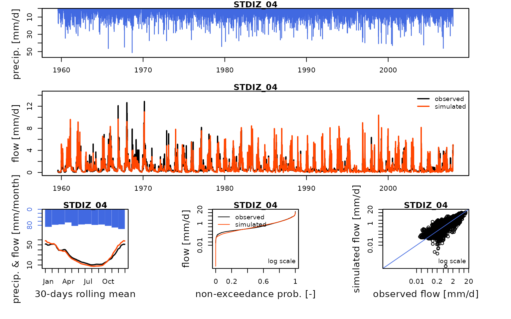
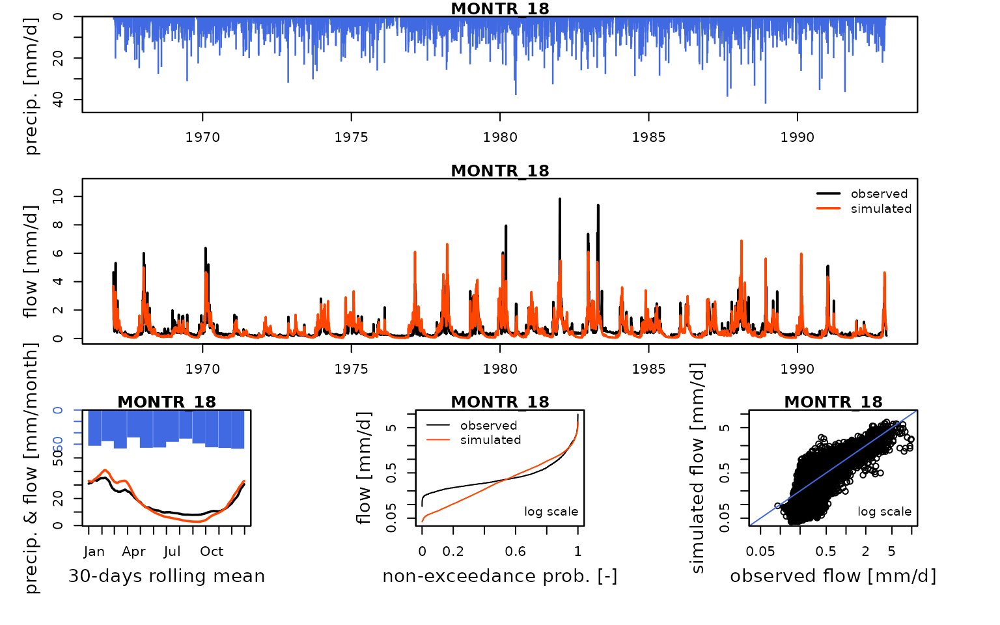
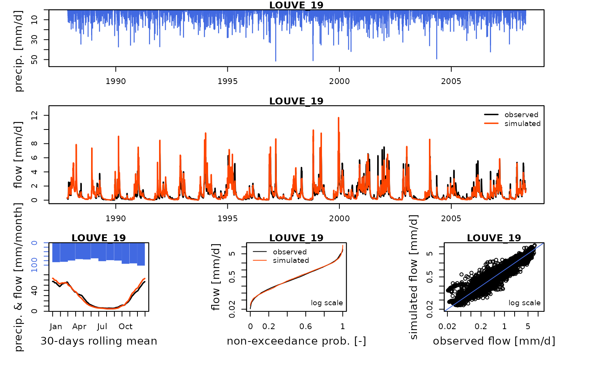
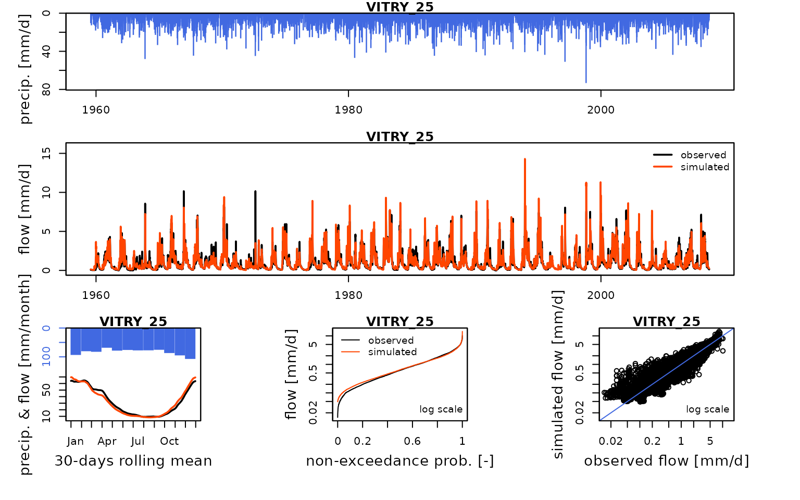
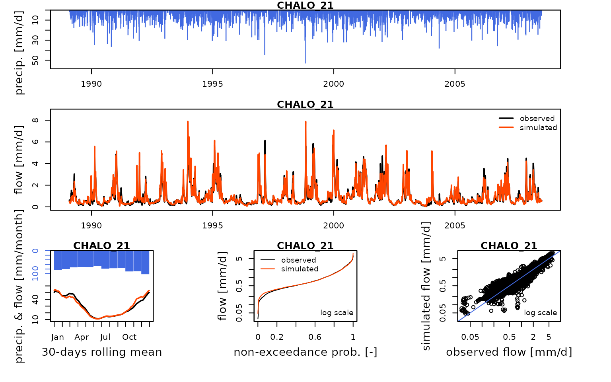
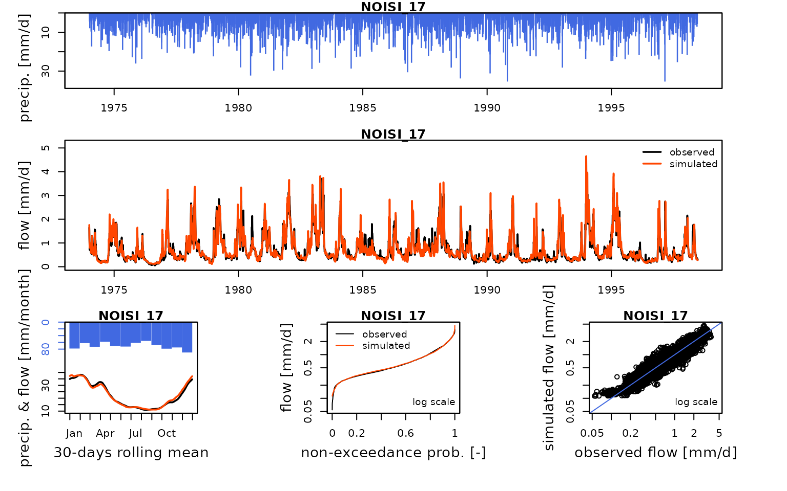

V05b_Open-loop_influenced_flow_calibration_GR6J.Rmd
library(airGRiwrm)
#> Loading required package: airGR
#>
#> Attaching package: 'airGRiwrm'
#> The following objects are masked from 'package:airGR':
#>
#> Calibration, CreateCalibOptions, CreateInputsCrit,
#> CreateInputsModel, CreateRunOptions, RunModelAs in vignette V05, this vignette proposes an example of calibration of influenced flow with the Marne reservoir but here with the GR6J model instead of GR4J. It will use influenced observation flows directly measured at gauging stations and flows recorded at reservoir inlets and outlets.
Loading naturalized data and influenced flow configuration:
#load("_cache/V01.RData")
load("_cache/V04.RData")We remove extra items from a complete configuration to keep only the Marne system:
selectedNodes <- c("MARNE_P23", "STDIZ_04", "LOUVE_19", "VITRY_25", "MARNE_P28", "MARNE_R25", "CHALO_21", "MONTR_18", "NOISI_17")
griwrm3 <- griwrm2[griwrm2$id %in% selectedNodes,]
griwrm3$model[!is.na(griwrm3$model)] <- "RunModel_GR6J"
griwrm3[griwrm3$id == "NOISI_17", c("down", "length")] = NA # Downstream station instead of PARIS_05
plot(griwrm3)We can now generate the new GRiwrmInputsModel
object:
library(seinebasin)
data(QOBS)
iEnd <- which(DatesR == as.POSIXct("2008-07-31", tz = "UTC"))
data(Qreservoirs)
QresMarne <- Qreservoirs[1:iEnd, grep("MARNE", colnames(Qreservoirs))]
id_GR_nodes <- griwrm3$id[!is.na(griwrm3$model)]
InputsModel3 <- CreateInputsModel(griwrm3,
DatesR[1:iEnd],
Precip[1:iEnd, id_GR_nodes],
PotEvap[1:iEnd, id_GR_nodes],
QresMarne)
#> CreateInputsModel.GRiwrm: Treating sub-basin STDIZ_04...
#> CreateInputsModel.GRiwrm: Treating sub-basin MONTR_18...
#> CreateInputsModel.GRiwrm: Treating sub-basin LOUVE_19...
#> CreateInputsModel.GRiwrm: Treating sub-basin VITRY_25...
#> CreateInputsModel.GRiwrm: Treating sub-basin CHALO_21...
#> CreateInputsModel.GRiwrm: Treating sub-basin NOISI_17...We first define the run period:
IndPeriod_Run <- seq.int(
which(DatesR == (DatesR[1] + 365 * 24 * 60 * 60)), # Set aside warm-up period
iEnd # Until the end of the time series
)We define the (optional but recommended) warm up period as a one-year period before the run period:
IndPeriod_WarmUp <- seq.int(1,IndPeriod_Run[1] - 1)
RunOptions <- CreateRunOptions(
InputsModel3,
IndPeriod_WarmUp = IndPeriod_WarmUp,
IndPeriod_Run = IndPeriod_Run
)We define the objective function for the calibration:
InputsCrit <- CreateInputsCrit(
InputsModel = InputsModel3,
FUN_CRIT = ErrorCrit_KGE2,
RunOptions = RunOptions, Obs = Qobs[IndPeriod_Run,]
)
CalibOptions <- CreateCalibOptions(InputsModel3)
str(CalibOptions)
#> List of 6
#> $ STDIZ_04:List of 4
#> ..$ FixedParam : logi [1:7] NA NA NA NA NA NA ...
#> ..$ SearchRanges : num [1:2, 1:7] 1.00e-02 2.00e+01 4.59e-05 2.18e+04 -1.09e+04 ...
#> ..$ FUN_TRANSFO :function (ParamIn, Direction)
#> ..$ StartParamDistrib: num [1:3, 1:7] 1.25 2.5 5 36.6 49.4 ...
#> ..- attr(*, "class")= chr [1:5] "CalibOptions" "daily" "GR" "SD" ...
#> $ MONTR_18:List of 4
#> ..$ FixedParam : logi [1:6] NA NA NA NA NA NA
#> ..$ SearchRanges : num [1:2, 1:6] 4.59e-05 2.18e+04 -1.09e+04 1.09e+04 4.59e-05 ...
#> ..$ FUN_TRANSFO :function (ParamIn, Direction)
#> ..$ StartParamDistrib: num [1:3, 1:6] 36.598 49.402 90.017 -1.175 -0.521 ...
#> ..- attr(*, "class")= chr [1:4] "CalibOptions" "daily" "GR" "HBAN"
#> $ LOUVE_19:List of 4
#> ..$ FixedParam : logi [1:6] NA NA NA NA NA NA
#> ..$ SearchRanges : num [1:2, 1:6] 4.59e-05 2.18e+04 -1.09e+04 1.09e+04 4.59e-05 ...
#> ..$ FUN_TRANSFO :function (ParamIn, Direction)
#> ..$ StartParamDistrib: num [1:3, 1:6] 36.598 49.402 90.017 -1.175 -0.521 ...
#> ..- attr(*, "class")= chr [1:4] "CalibOptions" "daily" "GR" "HBAN"
#> $ VITRY_25:List of 4
#> ..$ FixedParam : logi [1:6] NA NA NA NA NA NA
#> ..$ SearchRanges : num [1:2, 1:6] 4.59e-05 2.18e+04 -1.09e+04 1.09e+04 4.59e-05 ...
#> ..$ FUN_TRANSFO :function (ParamIn, Direction)
#> ..$ StartParamDistrib: num [1:3, 1:6] 36.598 49.402 90.017 -1.175 -0.521 ...
#> ..- attr(*, "class")= chr [1:4] "CalibOptions" "daily" "GR" "HBAN"
#> $ CHALO_21:List of 4
#> ..$ FixedParam : logi [1:7] NA NA NA NA NA NA ...
#> ..$ SearchRanges : num [1:2, 1:7] 1.00e-02 2.00e+01 4.59e-05 2.18e+04 -1.09e+04 ...
#> ..$ FUN_TRANSFO :function (ParamIn, Direction)
#> ..$ StartParamDistrib: num [1:3, 1:7] 1.25 2.5 5 36.6 49.4 ...
#> ..- attr(*, "class")= chr [1:5] "CalibOptions" "daily" "GR" "SD" ...
#> $ NOISI_17:List of 4
#> ..$ FixedParam : logi [1:7] NA NA NA NA NA NA ...
#> ..$ SearchRanges : num [1:2, 1:7] 1.00e-02 2.00e+01 4.59e-05 2.18e+04 -1.09e+04 ...
#> ..$ FUN_TRANSFO :function (ParamIn, Direction)
#> ..$ StartParamDistrib: num [1:3, 1:7] 1.25 2.5 5 36.6 49.4 ...
#> ..- attr(*, "class")= chr [1:5] "CalibOptions" "daily" "GR" "SD" ...
#> - attr(*, "class")= chr [1:2] "GRiwrmCalibOptions" "list"The optimization (i.e. calibration) of parameters can now be performed:
OutputsCalib <- Calibration(InputsModel3, RunOptions, InputsCrit, CalibOptions)
#> Calibration.GRiwrmInputsModel: Treating sub-basin STDIZ_04...
#> Grid-Screening in progress (0% 20% 40% 60% 80% 100%)
#> Screening completed (2187 runs)
#> Param = 5.000, 36.598, -0.521, 60.340, 2.345, 0.220, 20.086
#> Crit. KGE2[Q] = 0.7947
#> Steepest-descent local search in progress
#> Calibration completed (211 iterations, 5129 runs)
#> Param = 19.990, 162.474, -0.050, 38.741, 3.693, 0.109, 4.721
#> Crit. KGE2[Q] = 0.9195
#> Calibration.GRiwrmInputsModel: Treating sub-basin MONTR_18...
#> Grid-Screening in progress (0% 20% 40% 60% 80% 100%)
#> Screening completed (729 runs)
#> Param = 90.017, -0.521, 60.340, 2.345, 0.220, 20.086
#> Crit. KGE2[Q] = 0.7904
#> Steepest-descent local search in progress
#> Calibration completed (79 iterations, 1699 runs)
#> Param = 175.611, -0.318, 46.474, 2.412, 0.272, 6.006
#> Crit. KGE2[Q] = 0.8382
#> Calibration.GRiwrmInputsModel: Treating sub-basin LOUVE_19...
#> Grid-Screening in progress (0% 20% 40% 60% 80% 100%)
#> Screening completed (729 runs)
#> Param = 49.402, -0.521, 60.340, 2.345, 0.020, 20.086
#> Crit. KGE2[Q] = 0.9127
#> Steepest-descent local search in progress
#> Calibration completed (33 iterations, 1099 runs)
#> Param = 58.518, -0.521, 94.421, 2.221, 0.026, 14.515
#> Crit. KGE2[Q] = 0.9290
#> Calibration.GRiwrmInputsModel: Treating sub-basin VITRY_25...
#> Grid-Screening in progress (0% 20% 40% 60% 80% 100%)
#> Screening completed (729 runs)
#> Param = 36.598, -0.521, 148.413, 2.345, 0.020, 20.086
#> Crit. KGE2[Q] = 0.9197
#> Steepest-descent local search in progress
#> Calibration completed (56 iterations, 1394 runs)
#> Param = 33.665, -0.521, 163.534, 3.691, 0.043, 16.471
#> Crit. KGE2[Q] = 0.9473
#> Calibration.GRiwrmInputsModel: Treating sub-basin CHALO_21...
#> Grid-Screening in progress (0% 20% 40% 60% 80% 100%)
#> Screening completed (2187 runs)
#> Param = 1.250, 90.017, -1.175, 148.413, 1.369, 0.020, 148.413
#> Crit. KGE2[Q] = 0.9181
#> Steepest-descent local search in progress
#> Calibration completed (93 iterations, 3462 runs)
#> Param = 0.409, 616.307, -1.175, 478.348, 2.344, 0.026, 3.882
#> Crit. KGE2[Q] = 0.9560
#> Calibration.GRiwrmInputsModel: Treating sub-basin NOISI_17...
#> Grid-Screening in progress (0% 20% 40% 60% 80% 100%)
#> Screening completed (2187 runs)
#> Param = 1.250, 90.017, -1.175, 148.413, 2.345, 0.220, 148.413
#> Crit. KGE2[Q] = 0.8476
#> Steepest-descent local search in progress
#> Calibration completed (84 iterations, 3358 runs)
#> Param = 1.146, 828.119, -1.175, 171.034, 2.219, 0.217, 36.077
#> Crit. KGE2[Q] = 0.9489Now that the model is calibrated, we can run it with the optimized parameter values:
Param5 <- sapply(griwrm3$id, function(x) {OutputsCalib[[x]]$Param})
OutputsModels3 <- RunModel(
InputsModel3,
RunOptions = RunOptions,
Param = Param5
)
#> RunModel.GRiwrmInputsModel: Treating sub-basin STDIZ_04...
#> Warning in RunModel_Lag(InputsModel, RunOptions, Param[1], OutputsModel): 115
#> time steps with negative flow, set to zero.
#> RunModel.GRiwrmInputsModel: Treating sub-basin MONTR_18...
#> RunModel.GRiwrmInputsModel: Treating sub-basin LOUVE_19...
#> RunModel.GRiwrmInputsModel: Treating sub-basin VITRY_25...
#> RunModel.GRiwrmInputsModel: Treating sub-basin CHALO_21...
#> Warning in RunModel_Lag(InputsModel, RunOptions, Param[1], OutputsModel): 11
#> time steps with negative flow, set to zero.
#> Warning in RunModel_Lag(InputsModel, RunOptions, Param[1], OutputsModel): 3
#> time steps with NA values
#> RunModel.GRiwrmInputsModel: Treating sub-basin NOISI_17...
#> Warning in RunModel_Lag(InputsModel, RunOptions, Param[1], OutputsModel): 6
#> time steps with NA valuesWe can compare these simulated flows with influenced discharge measurements:
htmltools::tagList(lapply(
griwrm3$id[!is.na(griwrm3$model)],
function(x) {
Q3 <- Qobs[RunOptions[[1]]$IndPeriod_Run, x]
iQ3 <- which(!is.na(Q3))
IndPeriod_Obs <- iQ3[1]:tail(iQ3, 1)
OutputsModels <- ReduceOutputsModel(OutputsModels3[[x]], IndPeriod_Obs)
plot(OutputsModels, Qobs = Q3[IndPeriod_Obs], main = x)
}
))
#> Warning in plot.OutputsModel(OutputsModels, Qobs = Q3[IndPeriod_Obs], main =
#> x): zeroes detected in 'Qsim': some plots in the log space will not be created
#> using all time-steps